용접기사 (2012-03-04 기출문제)
1과목: 기계제작법
1. 기어 가공에 사용되는 절삭공구 중 창성식 절삭공구가 아닌 것은?
- 래크 커터(rack cutter)
- 피니언 커터(pinion cutter)
- 총형 커터(formed cutter)
- 호브(hob)
(정답률: 50%)

2. 아크용접에서 교류와 직류에 관한 설명 중 틀린 것은?
- 교류는 직류에 비해서 아크의 안정성이 떨어진다.
- 교류는 비피복봉 사용이 가능하고, 직류는 비피복봉 사용이 불가능하다.
- 교류는 극성변화가 불가능하고, 직류는 극성변화가 가능하다.
- 직류는 전격의 위험이 적고, 교류는 전격의 위험이 많다.
(정답률: 48%)
3. 다음 중 선반, 밀링에서 강재, 탄소강을 중절삭할 때 초경합금 공구재료는 어떤 재종을 사용하는 것이 가장 적합한가?
- P20
- M10
- K20
- K10
(정답률: 61%)
4. 액체 호닝의 장점이 아닌 것은?
- 뜽질면의 진원도, 직진도가 좋다.
- 가공시간이 짧다.
- 공작물의 피로강도를 10% 정도 향상시킨다.
- 형상이 복잡한 것도 쉽게 가공한다.
(정답률: 32%)
5. Die Casting의 특징에 해당하지 않는 것은?
- 제작비가 적어 소량생산에도 적합하다.
- 급냉으로 결정립이 미세화하고, 조직이 치밀한 젶ㅁ을 얻을 수 있다.
- 정도가 높고 주물표면이 깨끗하여 다듬질 작업량을 줄 일 수 있다.
- 주물에 이용되는 합금은 주로 알루미늄 합금과 마그네슘 합금이 사용된다.
(정답률: 67%)
6. 주로 비철금속인 납, 주석, 알루미늄 등의 재료를 냉간 압출가공을 하는 것으로 튜브나 건전지 케이스 등을 가공하는데 적합한 가공법은?
- 충격압출
- 전방 압출
- 정수압압출
- 중공압출
(정답률: 50%)
7. 표면경화열처리에서 금속 침투법(metallic cementation)과 이에 따른 침투제가 틀린 것은?
- 세라다이징 - Ce 침투
- 크로마이징 - Cr 침투
- 카로라이징 - Al 침투
- 보론나이징 - B 침투
(정답률: 62%)
8. RP의 종류 중 고속 3차원 원형제작법에서 광경화성수지에 레이저광성을 주사하면 주사된 부분이 경화되는 원리를 이용한 것은?
- SLA(Stereo Lithographic Apparatus)
- FDM(Fused Deposition Modelung)
- SLS(Selective Laser Sintering)
- LOM(Laminated Object Manufacturing)
(정답률: 45%)
9. 표면거칠기 측정법 중 광절단법의 장점이 아닌 것은?
- 피 측정면과 무접촉으로 측정이 가능하다.
- 연질재료의 측정이 가능하다.
- 많은 범위의 거칠기를 한 번에 측정할 수 있다.
- 조작이 간단하고 신속한 측정이 가능하다.
(정답률: 48%)
10. 유사한 부품들을 분류하고 하나의 그룹으로 만들어 내는 기법을 생산 및 설계에서도 비슷한 점을 활용하는 생산기술 방식은?
- 그룹기법(GT)
- 컴퓨터 이용 공정계획(CAPP)
- 컴퓨터 통합 생산시스템(CIMS)
- 공장자동화(FA)
(정답률: 50%)
11. 어미자의 최소눈금이 0.5mm, 어미자의 눈금 12mm 를 25등분한 버니어 캘리퍼스의 최소 읽음값(mm)은?
- 0.02
- 0.03
- 0.04
- 0.⑤
(정답률: 67%)
12. 굽힘 가공 시 스프링 백의 양이 커지는 경우에 해당하지 않는 것은?
- 두께가 얇을수록
- 탄성한계 및 강도가 클수록
- 굽힘 각도가 예리할수록
- 굽힘 반지름이 작을수록
(정답률: 55%)
13. 경화된 작은 철구(鐵球)를 피가공물에 고압으로 분사하여 표면의 경도를 증가시켜 기계적 성질, 특히 피로강도(fatigue strength)를 향상시키는 가공법은?
- 버핑
- 버니싱
- 전해연마
- 숏 피닝
(정답률: 60%)
14. 지름 6mm, 날수 6개인 엔드밀을 사용하여 회전수 1500rpm, 이송 1800mm/min로 가공할 때, 날 1개 당이송량은 몇 mm인가?
- 0.1
- 0.2
- 0.3
- 0.4
(정답률: 28%)
15. 게이지 블록의 치수안정도 등급에 해당하지 않는 것은?
- P급
- 0급
- 1급
- 2급
(정답률: 59%)
16. 프레스 가공의 특징이 아닌 것은?
- 다품종 소량 생산에 적합하지 않다.
- 가공재료에는 철금속만 이용된다.
- 균일한 제품을 대량으로 생산 가능하다.
- 재료를 경제적으로 사용할 수 있다.
(정답률: 58%)
17. 인발가공시 다이의 압력이 경계윤활상태일 때 마찰력을 감소시키고 마모를 적게 하며 표면을 매끈하게 하기 위하여 사용하는 윤활제가 아닌 것은?
- 석회
- 비누
- 흑연
- 사염화탄소
(정답률: 45%)
18. 다음 중 등온변태를 이용한 특수열처리가 아닌 것은?
- 오스템퍼링(austempering)
- 서브제로처리(sub-zero treatment)
- 마템퍼링(martempering)
- 마퀜칭(marquenching)
(정답률: 50%)
19. 리드스크루가 8mm인 선반으로 피치 3mm의 3중 나사를 깎을 때 변화기어의 계산으로 맞는 것은?
- A=52, C=44
- A=62, C=54
- A=72, C=64
- A=82, C=74
(정답률: 48%)
20. 용접토치로부터 불활성가스사 분출됨과 동시에 지름 1~2mm의 소모성 전극와이어와 모재 사이에 아크를 발생시켜 접합하는 용접은?
- TIG welding
- MIG welding
- Laser welding
- Stud welding
(정답률: 67%)
2과목: 재료역학
21. 그림과 같이 원형단면을 갖는 연강봉이 100kN의 인장하중을 받을 때 이 봉의 신장량은? (단, 탄성계수 E=200GPa이다.)
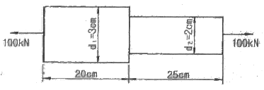
- 0.⑤4cm
- 0.162cm
- 0.236cm
- 0.302cm
(정답률: 37%)
22. 단면이 가로 100mm, 세로 150mm인 사각 단면보가 그림과 같이 하중(P)을 받고 있다. 허용 전단응력이 τa=20MPa일 때 전단응력에 의한 설계에서 허용하중 P는 몇 kN인가?
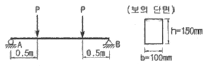
- 10
- 20
- 100
- 200
(정답률: 22%)
23. 그림과 같이 두께가 20mm, 외경이 200mm인 원관을 고정벽으로부터 수평으로 돌출시켜 원관에 물을 충만시켜서 자유단으로 부터 불을 방출시킨다. 이 때 자유단의 처짐이 5mm라면 원관의 길이 ℓ는 약 몇 cm인가? (단, 원관 재료의 탄성계수 E=200GPa, 비중은 7.8dlrh anfdml alfehsms 1000kg/m3 이다.)
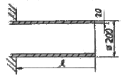
- 130
- 230
- 330
- 430
(정답률: 18%)
24. 그림과 같은 단순 지지보에서 길이는 5m, 중앙에서 집중하중 P가 작용할 때 최대 처짐은 약 몇 mm인가? (단, 보의 단면(폭×높이=b×h)은 5cm×12cm, 탄성계수 E =210GPa, P=25kN으로 한다.)
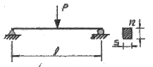
- 83
- 43
- 28
- 65
(정답률: 28%)
25. 외경이 내경의 1.5배인 중공축과 재질과 길이가 같고 지름이 중공축의 외경과 같은 중식축이 동일 회전수에 동일 동력을 전달한다면, 이때 중실축에 대한 중공축의 비틀림각의 비는?
- 1.25
- 1.50
- 1.75
- 2.00
(정답률: 39%)
26. 그림과 같은 직사각형 단면의 보에 P=4 kN의 하중이 10° 경사진 방향으로 작용한다. A점에서의 길이 방향의 수직 응력을 구하면 몇 MPa인가?
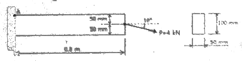
- 5.89 (압축)
- 6.67 (압축)
- 0.79 (인장)
- 7.46 (인장)
(정답률: 30%)
27. 길이가 L인 양단 고정보의 중앙점에 집중하중 P가 작용할 때 중앙점의 최대 처짐은? (단, 보의 굽힘강성 EI는 일정하다.)
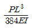
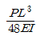
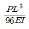
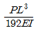
(정답률: 36%)
28. 양단이 고정단이고 길이가 직경의 10배인 주철 재질의 원주가 있다. 이 기둥의 임계응력을 오일러 식을 이용해 구하면 얼마인가? (단, 재료의 탄성계수는 E 이다.)
- 0.266E
- 0.0247E
- 0.0⑤47E
- 0.00146E
(정답률: 48%)
29. 길이 1m인 단순보가 아래 그림처럼 q=5kN/m의 균일 분포하중과 P=1kN의 집중하중을 받고 있을 때 최대 굽힘 모멘트는 얼마이며 그 발생되는 지점은 A점에서 얼마되는 곳인가?
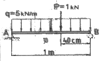
- 48cm에서 241Nㆍm
- 58cm에서 620Nㆍm
- 48cm에서 800Nㆍm
- 58cm에서 841Nㆍm
(정답률: 30%)
30. 다음과 같은 압력 기구에 안전 밸브가 장치되어 있다. 이때 스프링 상수가 k=100kN/m이고 자연상태에서의 길이는 240mm라 한다. 몇 kN/m2의 압력에 밸브가 열리겠는가?
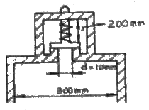
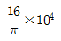
- π×104
- π×102
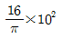
(정답률: 53%)
31. 그림과 같은 집중하중을 받는 단순 지지보의 최대 굽힘 모멘트는? (단, 보의 굽힘강성 EI는 일정하다.)
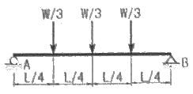
- 1/8WL
- 1/6WL
- 1/24WL
- 1/12WL
(정답률: 19%)
32. 코일스프링에서 가하는 힘 P, 코일 반지름 R, 소선의 지름 d, 전단탄성계수 G라면 코일 스프링에 한번 감길때마다 소선의 비틀림 각 Φ를 나타내는 식은?
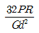
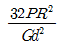
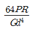
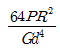
(정답률: 47%)
33. 지름 d인 환봉을 처짐이 최소가 되도록 직사각형 단면의 보를 만들 경우 단면의 폭 b와 높이 h의 비(μ/b)는?
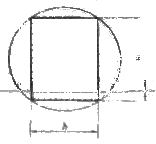
- 1
- √2
- √3
- √5
(정답률: 34%)
34. 철도용 레일의 양단을 고정한 후 온도가 30℃에서 15℃로 내려가면 발생하는 열응력은 몇 MPa 인가? (단, 레일재료의 열팽창계수 a=0.000012/℃ 이고, 균일한 온도 변화를 가지며, 탄성계수 E=210GPa이다.)
- 50.4
- 37.8
- 31.2
- 28.0
(정답률: 42%)
35. 그림과 같은 1축 응력(응력치:σ, σ는 y축 방향)상태이서 재료의 Z-Z 단면(X축과° 반시계 방향 경사)에 생기는 수직응력 σn, 전단응력 τn의 값은?
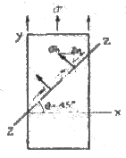
- σn=σ, τn=σ
- σn=σ, τn=σ/2
- σn=σ/2, τn=σ
- σn=σ/2, τn=σ/2
(정답률: 15%)
36. 짧은 주철재 실린더가 축방향 압축 응력과 반경 방향의 압축 응력을 각각 40MPa과 10MPa를 받는다. 탄성계수 E=100Gpa, 포아송 비 v=0.25, 직경 d=120mm, 길이 L=200mm 일 때 지름의 변화량은 약 몇 mm 인가?
- 0.001
- 0.002
- 0.003
- 0.004
(정답률: 23%)
37. 굽힘하중을 받고 있는 선형 탄성 군일단면 보의 곡률 및 곡률반경에 대한 설명으로 틀린 것은?
- 곡률은 굽힘모멘트 M에 반비례한다.
- 곡률반경은 탄성계수 E에 비례한다.
- 곡률은 보의 단면 2차 모멘트 I에 반비례한다.
- 곡률반경은 곡률의 역수이다.
(정답률: 38%)
38. 양단이 고정된 축을 그림과 같이 m-n 단면에서 비틀면 고정단에서 생기는 저항 비틀림 모멘트의 비 TS/TA는?
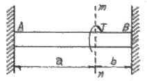
- ab
- b/a
- a/b
- ab2
(정답률: 32%)
39. 진변형률(ET)과 진응력(σT)을 공칭 응력 (σn)과 공칭변형률(En)로 나타낼 때 옳은 것은?
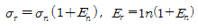
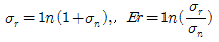
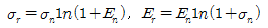
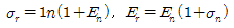
(정답률: 30%)
40. 그림에서 W1과 W2가 어느 한쪽도 내려가지 않게 하기 위한 W1:W2의 크기의 비는 어느 것인가? (단, 경사면의 마찰은 무시한다.)
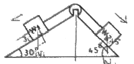
- W1 : W2 = sin30° : sin45°
- W1 : W2 = sin45° : sin30°
- W1 : W2 = cos45° : cod30°
- W1 : W2 = cos30° : cod45°
(정답률: 35%)
3과목: 용접야금
41. 중(重)금속에 속하지 않는 것은?
- Fe
- Ni
- Mg
- Cr
(정답률: 60%)
42. 결정립 내에 있는 원자에 비하여 결정립계에 있는 원자들의 상태는 어떠한가?
- 결합에너지가 작으므로 안정하다.
- 결합에너지가 작으므로 불안정하다.
- 결합에너지가 크므로 안정하다.
- 결합에너지가 크므로 불안정하다.
(정답률: 44%)
43. 용융금속 중에 녹는 기체성분으로 흡열반응을 일으키며 지면균열, 은점 등 악영향을 미치는 원소는?
- 산소
- 질소
- 수소
- CO
(정답률: 58%)
44. 다음 보기에서 ( )안에 들어갈 적당한 용어는?
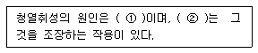
- ① 수소, ② 질소
- ① 규소, ② 수소
- ① 산소, ② 탄소
- ① 질소, ② 산소
(정답률: 50%)
45. 오스테나이트계 스테인리스강의 용체화 및 소분열처리의 설명 중 가장 거리가 먼 것은?
- 내 응력부식균열(SCC)을 위래서 요구되는 열처리이다.
- 내 입계부식(IGC)을 위해서 요구되는 열처리이다.
- Cr2O3산화물의 완전용해를 위해 요구되는 열처리이다.
- 고온에서 급냉하여야 한다.
(정답률: 25%)
46. 박판을 용접한 후 변형을 교정하는 점 수축법의 시공내용으로 틀린 것은?
- 가열온도는 500 ~ 600℃ 이다.
- 가열시간은 약 30초 이다.
- 가열점의 지름은 20~30mm 이다.
- 가열 후 공기로 서냉한다.
(정답률: 36%)
47. 다음 중 용접 열영향부 균열이 아닌 것은?
- root 균열
- toe 균열
- blow hole
- micro 균열
(정답률: 53%)
48. 용접봉 중 용착속도가 크고 작업능률 및 슬래그의 박리성이 좋아 아래보기 자세 및 수평 필릿 용접에 주로 사용하는 것은?
- E4301
- E4303
- E4316
- E4326
(정답률: 39%)
49. TTT 곡선에서 800℃의 용접물을 nose 부분을 거치지 않고 250℃ 부근까지 급냉 후 항온 유지한 후의 조직은?
- Austenite + Martensite
- Austenite + Bainite
- 상부 Bainite + Martensite
- 하부 Bainite + Martensite
(정답률: 40%)
50. 18Cr-8Ni 스테인리스강에 600~800℃의 온도범위로 가열하면 오스테나이트 결정입계에 탄화물이 석출하여 내식성이 현저하게 저하하는 현상은 무엇인가?
- 결정 성장
- 미립화 확산
- 입간 부식
- 입계 조립화
(정답률: 53%)
51. 탈산제로 작용하고 강도 및 경도를 증가시키는 원소는?
- Si
- Mn
- P
- S
(정답률: 34%)
52. 용착(용접)금속부의 가장 대표적인 응고 조직은?
- 주상결정
- 판상결정
- 층상결정
- 혼합결정
(정답률: 73%)
53. 시효현상(aging phenomena)에 대한 설명 중 틀린 것은?
- 담금질한 강을 상온에서 장시간 방치하면 그 성질이 변한다.
- 냉간가공한 강을 100℃ 정도로 가열하면 경도가 떨어지고 연신율이 증가한다.
- 냉간가공한 강을 상온에서 장시간 방치하면 경도가 상승한다.
- 시효현상을 없애게 위해 Si 등 합금원소를 첨가한다.
(정답률: 27%)
54. 저온균열인 비드 밑 균열(under bead crack)의 발생 원인에 해당되지 않는 것은?
- 용착강 및 열영향부 수축
- 오스테나이트 → 마텐자이트 변태
- 산소(Oxygen) 혼입
- 수소 집중
(정답률: 31%)
55. 스테인리스강용 용접봉의 피복제로 티탄계의 주성분은?
- 루틸
- 석회석
- 형석
- 일미나이트
(정답률: 45%)
56. 탄소강의 용접 시 슬래그의 성질로 옳은 것은?
- 슬래그의 용융점이 높아야 한다.
- 표면장력이 커야 한다.
- 응고범위가 넓어야 한다.
- 점성이 높아야 한다.
(정답률: 42%)
57. 용접후열처리(Post Weld Heat Treatment)의 목적 중 가장 거리가 먼 것은?
- 용접중의 변형을 원상 복원시킨다.
- 내부의 잔류응력을 제거한다.
- 용접부의 균열을 방지한다.
- 부식 저항성을 향상시킨다.
(정답률: 62%)
58. 강의 열처리에서 저온 풀림이 아닌 것은?
- 응력 제거 풀림
- 프로세스 풀림
- 재결정 풀림
- 확산 풀림
(정답률: 17%)
59. 주철에 첨가되어 흑연화를 촉진하는 원소는?
- Cr
- Mo
- W
- Si
(정답률: 24%)
60. 시효경화성 고강도 AI합금으로 가볍고 기계적 성질이 우수하여 항공기 구조재로 사용되는 것은?
- 화이트메탈(white metal)
- 도우메탈(dow metal)
- 두랄루민(duralumin)
- 콘스탄탄(constantan)
(정답률: 77%)
4과목: 용접구조설계
61. 방사선 탐상시험에서 계조계 값을 구하는 식으로 맞는 것은? (단, A : 계조계에 근접한 검사체의 농도, B: 검사체의 농도, C: 계조계의 중앙부 농도)
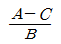
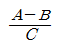
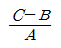
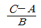
(정답률: 30%)
62. 용접변형에 영향을 미치는 인자 중 변형을 억제하는 인자에 해당하는 것은?
- 용전전류
- 용접속도
- 가용접의 크기와 피치
- 용접층수
(정답률: 50%)
63. 용접부의 냉각속도에 대한 설명으로 틀린 것은?
- 후판이 박판보다 냉각속도가 빠르다.
- 맞대기 이음보다 십자 이음 용접의 경우가 냉각속도가 빠르다.
- T형 이음보다 맞대기 이음 용접의 경우가 냉각속도가 빠르다.
- 두꺼운 판을 용접할 때 열은 여러 방향으로 방열되어 냉각속도가 빠르다.
(정답률: 64%)
64. 루트(root) 균열 발생원인의 기술로 옳지 않은 것은?
- 용착금속 주위에서 응력 집중을 일으키는 노치와 저온에서 생긴 수축응력에 의해 발생된다.
- 확상선 수소가 모여서 부가적인 내부 압력에 의해 발생한다.
- 용착금속을 냉각하여 수축하려고 하므로 모재로부터 좌우로 당김을 받아 발생한다.
- 용접부가 100℃ 정도의 저온으로 냉각될 때가지 냉각시간을 짧게 하면 발생한다.
(정답률: 54%)
65. 용접 길이가 짧다든지 변형 및 잔류 응력이 별로 문제가 되지 않을 때 사용하는 용착법은?
- 덧살 올림법
- 도열법
- 전진법
- 후진법
(정답률: 58%)
66. 필릿 용접치수를 결정하는데 하용되는 다음 그림과 같은 선형의 중립축에 단면 2차 모멘트 Ix-x를 구하는 식으로 옳은 것은? (단, t=1임)
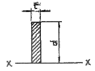
- d/3
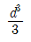
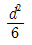
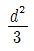
(정답률: 62%)
67. 용접시공법 중에서 압접에 속하는 것은?
- 전자빔 용접
- 미그 용접
- 마찰 용접
- 테르밋 용접
(정답률: 67%)
68. 두꺼운 판을 양면 용접을 할 수 없는 경우에 가공하는 방법으로 한쪽 용접에 의해 충분한 용입을 얻으려고 할 때 사용되는 용접 홈의 형상은?
- V형 홈
- X형 홈
- U형 홈
- K형 홈
(정답률: 37%)
69. 아크 용접부 파단면에 생기는 것으로 용접부의 냉각 속도가 너무 빠르고 수소 용해량이 많을 때 생기는 결함은?
- 선상조직
- 온점
- 토 균열
- 비금속 개재물
(정답률: 27%)
70. 일반적으로 용접 구조물을 설계할 경우 제품의 안전성, 신뢰성, 경제적인 점 등을 고려하여야 하는데 이때 주의 사항 중 틀린 것은?
- 용접선이 집중, 접근 및 교차되도록 할 것
- 구조상 불연속부, 단면 형상의 급격한 변화가 되는 곳 및 노치를 피하도록 할 것
- 용접순서는 항상 중앙에서 시작하여 밖으로 향하여 용접할 수 있도록 할 것
- 용접이음부의 각 부분이 가능한 장시간 동안 최대 자유를 갖도록 용접순서를 정할 것
(정답률: 74%)
71. 용접균열시험법 중 고온균열시험법의 종류가 아닌 것은?
- 바레스트레인트 균열시험법
- Murex 균열시험법
- 슬릿형 균열시험법
- 가변변형속도 균열시험법
(정답률: 36%)
72. 완전 용입에서 단순굽힘일 때, 굽힘 단면계수(Z)를 구하는 식은? (단, 두께 t, 길이ℓ)
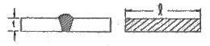
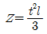
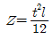
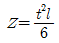
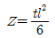
(정답률: 62%)
73. 다음 중 용접 후 처리에 있어서 용접변형의 교정방법으로 틀린 것은?
- 롤러에 의항 변형교정
- 가열 후 해머링 하는 방법
- 절단에 의한 성형과 재용접
- 박판에 대하여 가열 전 압력을 주어 수냉
(정답률: 42%)
74. 가스용접에서 모재의 두께가 2mm 일 때, 적당한 용접봉의 지름은 얼마인가? (단, 계산에 의해 구한다.)
- 1mm
- 2mm
- 3mm
- 4mm
(정답률: 64%)
75. 용접의 변형경감 및 교정에서 역(逆)변형법을 올바르게 설명한 것은?
- 공작물을 가접 또는 지그 홀더 등으로 장착하고 변형의 발생을 억제하는 방법이다.
- 용접부 근처에 물끼 잇는 석명, 천 등을 두고 모재에 용접입열을 막는 방법이다.
- 용접직후 피닝 해머로 비드를 두드려서 용접금속의 변형을 방지하는 방법이다.
- 용접금속 및 모재의 수축에 대하여 용접 전에 반대 방향으로 굽혀 놓고 작업하는 방법이다.
(정답률: 74%)
76. 용접 잔류응력에 대한 설명 중 틀린 것은?
- 용접 잔류응력은 용접부가 냉각할 때 발생한다.
- 용접 잔류응력은 용접부가 가열될 때 발생한다.
- 용착금속의 내부에는 냉각된 후 잔류응력이 존재한다.
- 잔류응력이 존재하면 그 구조물은 빨리 파괴될 수 있다.
(정답률: 66%)
77. 소재에 최적이라고 생각되는 용접봉 등의 소모재와 특정용접 공정에 의해 양호한 성질을 갖는 용접물리 시공될 수 잇는지에 대한 재료의 능력을 나타내는 것을 무엇이라고 하는가?
- 용접강도
- 용접이음
- 용착능력
- 용접성
(정답률: 50%)
78. 용접 결함의 보수 방법으로 적당하지 않는 것은?
- 균열의 경우 군열 양 끝에 판 두께 정도 떨어진 부분에 정지구멍을 뚫고 균열을 깎아내고 재 용접한다.
- 슬래그 섞임 부분은 바로 깎아내고 재 용접한다.
- 언더 컷 부분은 약간 굵은 용접봉으로 재 용접한다.
- 오버 랩의 경우 연삭기로 깎아내고 재 용접한다.
(정답률: 75%)
79. 용입 깊이 h1=h2=3mm의 불완전 용입의 평판 양면 맞대기 용접이음에 인장 하중 P=10kN이 직각으로 걸릴 때의 응력은 약 몇 N/mm2 인가? (단, 판 두께 9mm, 용접선 길이 ℓ=200mm임)
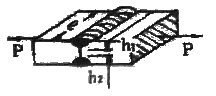
- 0.83
- 8.3
- 16
- 1.6
(정답률: 53%)
80. 다음 중 초음파 탐상법의 종류에 해당되지 않는 것은?
- 펄스 반사법
- 투과법
- 코일법
- 공진법
(정답률: 58%)
5과목: 용접일반 및 안전관리
81. 서브머지드 아크 용접의 다전극 용접 방식 중 아크의 복사열을 이용해 용접하므로 비교적 용입이 얕고 스테인리스강 등의 덧붙이 용접에 사용하는 방식은?
- 탠덤식
- 3전극식
- 황 병렬식
- 횡 직렬식
(정답률: 42%)
82. 실험에 의한 용접봉의 용융속도에 관한 설명으로 틀린 것은?
- 아크전압에 비례한다.
- 단위시간당 소비되는 용접봉의 길이로 나타낸다.
- 같은 종류의 용접봉이면 용접봉의 지름과 관계가 없다.
- 아크전류에 비례한다.
(정답률: 29%)
83. 용접기의 사용율을 나타내는 공식으로 맞는 것은?
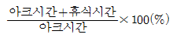
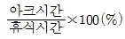
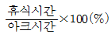
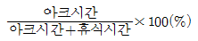
(정답률: 53%)
84. 플라스마 용접에서 플라스마의 발생용 작동가스는 어떤 것을 많이 사용하는가?
- 수소가스(H2)
- 아세틸렌가스(C2H2)
- 탄산가스(CO2)
- 산소가스(O2)
(정답률: 40%)
85. 용접법 중 압접 용접법에 속하지 않는 용접법은?
- 마찰 용접
- 유도가열 용접
- 스터드 용접
- 초음파 용접
(정답률: 37%)
86. 아크 용접 로봇자동화 시스템 중 용접물 구동장치에 속하는 것은?
- Jig&Fixture
- 포지셔너(positioner)
- 아크발생장치
- 제어부
(정답률: 58%)
87. 아크용접에서 피복제의 성분 중 슬랙(slag) 생성제는?
- 당밀
- 망간
- 이산화망간
- 니텔
(정답률: 54%)
88. 아크용접에서 위빙비드(weaving bead)의 위빙 폭은 용접봉 지름의 몇 배로 하는 것이 좋은가?
- 2~3배 이하
- 3~5배 이하
- 5~6배 이하
- 7~8배 이하
(정답률: 69%)
89. 납땜의 이음 형식과 틈새에 관한 설명으로 틀린 것은?
- 스카프(scarf) 이음은 맞대기 이음 보다 강도가 좋다.
- 이음 틈새가 너무 좁거나 크면 이음강도가 저하한다.
- 납땜의 강도는 겹치기 이음보다 맞대기 이음이 좋다.
- 맞대기 이음은 사용조건이 까다롭지 않은 부품에 사용한다.
(정답률: 44%)
90. 100A 이상 300A 미만의 아크 용접 및 절단 등에 쓰이는 적당한 차광유리의 규격은?
- NO. 6~7
- NO. 8~9
- NO. 10~12
- NO. 13~14
(정답률: 54%)
91. 내용적이 33L인 산소용기의 고압력계에 100 kgf/cm2으로 나타났다면, 프랑스식 300번의 팁으로는 몇 시간 용접할 수 있는가? (단, 산소와 아세틸렌의 혼합비는 1 : 1이다.)
- 11시간
- 15시간
- 20시간
- 7.5시간
(정답률: 67%)
92. 인체에 전류가 얼마 이상 흐르면 심장마비를 일으켜 사망할 위험이 있는가?
- 200mA
- 10mA
- 20mA
- 50mA
(정답률: 45%)
93. 다음 중 교류아트 용접기가 아닌 것은?
- 가동 철심형
- 정류기형
- 탭 전환형
- 가동 코일형
(정답률: 75%)
94. 납땜작업 시 사용하는 용제(flux)가 갖추어야 할 조건에 대한 설명으로 틀린 것은?
- 용제의 유효온도 범위가 납땜온도 보다 낮을 것
- 납땜 후 슬래그의 제거가 용이할 것
- 모재나 땜납에 의한 부식 작용이 최소한 일 것
- 청정한 금속면의 산화를 방지할 것
(정답률: 75%)
95. 피복아크 용접봉 피복제의 주된 역할에 대한 설명으로 틀린 것은?
- 용융 금속의 용적을 미세화 하여 용착 효율을 높인다.
- 스패터의 발생을 적게 한다.
- 전기 절연작용을 한다.
- 용착금속의 냉각속도를 빠르게 하여 급량을 방지한다.
(정답률: 56%)
96. 직류 아크 용접에서 역극성(DCRP)에 대한 설명 중 틀린 것은?
- 모재의 용입이 얕다.
- 용접봉 녹음이 빠르다.
- 박판, 주철, 비철금속의 용접에 쓰인다.
- 비드 폭이 좁다.
(정답률: 64%)
97. 직류 아크용접에서 전체 발열량 중 양극(+) 쪽에서 약 몇 % 정도 발생 하는가?
- 10~20%
- 30~40%
- 60~70%
- 80~90%
(정답률: 70%)
98. 무부하 전압 80V, 아크전압 30V, 아크전류 300A인 교류 용접기의 역률은 약 얼마인가? (단, 내부손실은 4kW이다.)
- 33.2%
- 54.2%
- 79.2%
- 99.2%
(정답률: 53%)
99. 가스용접 시 압력조정기의 구비조건 중 틀린 것은?
- 동작이 예민하고 확실할 것
- 조정압력과 사용압력의 차이가 클 것
- 조정압력은 항상 일정한 압력을 유지할 것
- 사용 시 빙결(氷結)하지 않을 것
(정답률: 77%)
100. 가스절단 방법에서 아름다운 절단면을 얻을 수 있는 조건을 잘 설명한 것은?
- 산소압력은 3kgf/cm2 이하로 하며 예열불꽃의 백심 끝이 모재 표면에서 약 1.5~2.0mm 정도가 좋다.
- 산소압력은 5kgf/cm2 이상으로 하며 예열불꽃의 백심 끝이 모재 표면에서 약 3.5~5.0mm 정도가 좋다.
- 산소압력은 7kgf/cm2 이하로 하며 예열불꽃의 백심 끝이 모재 표면에서 약 4~5mm 정도가 좋다.
- 산소압력은 5kgf/cm2 이상으로 하며 예열불꽃의 백심 끝이 모재 표면에서 약 5~7mm 정도가 좋다.
(정답률: 48%)